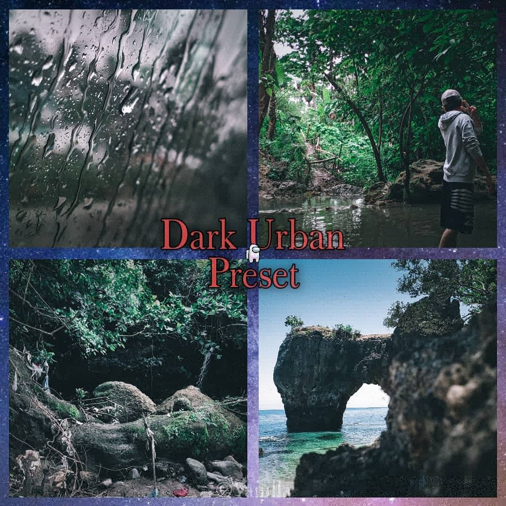
Preset by: Ian Torre
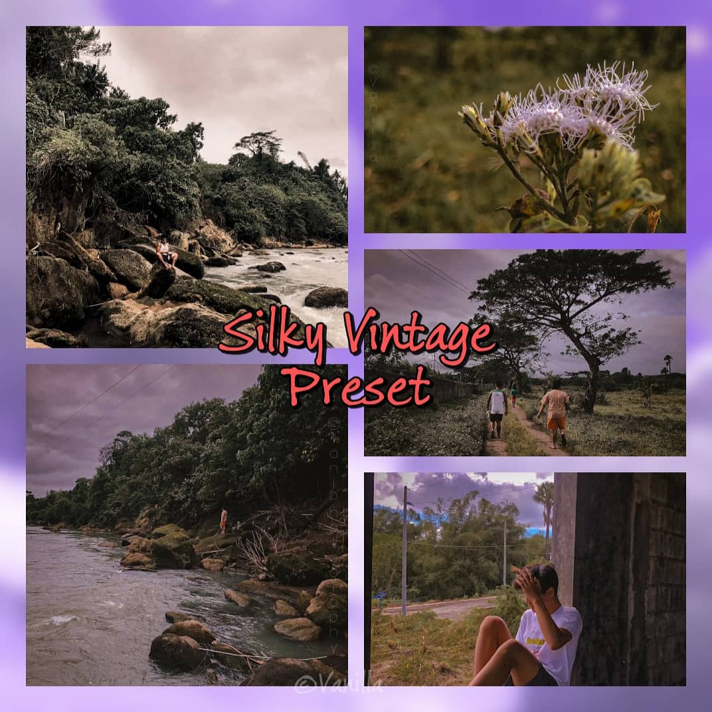
Preset by: Ean Torre
Title: Kupas
Captured by: Ian Torre
Date captured: April 5, 2020
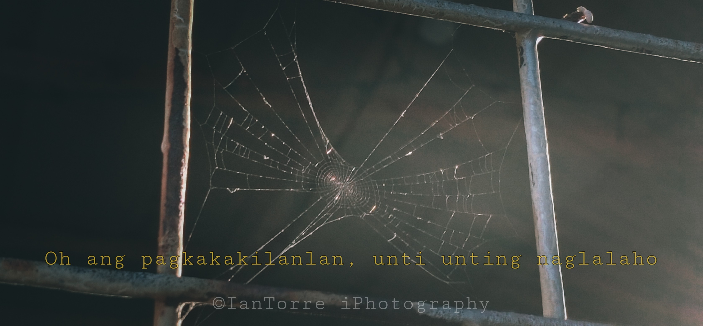
Title: Kalas
Captured by: Ian Torre
Date captured: May 12, 2019
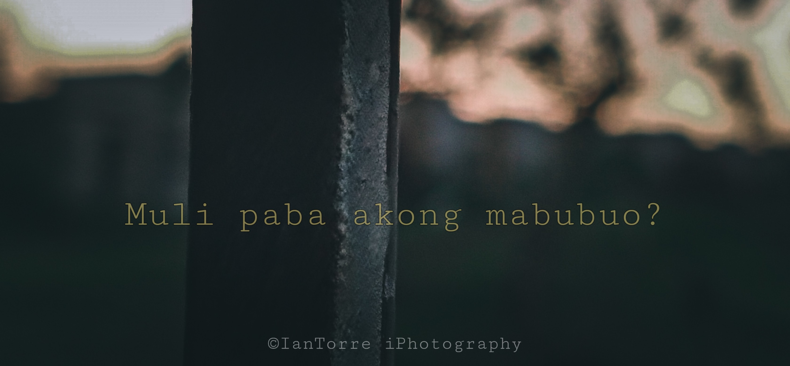
Title: Bato
Captured by: Ian Torre
Date captured: September 18, 2020
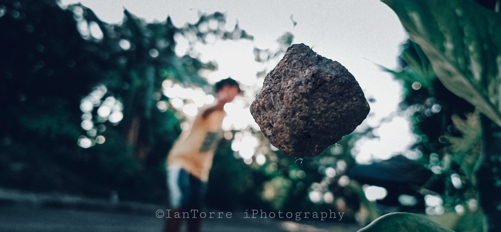
Title: Kapit
Captured by: Ian Torre
Date captured: October 12, 2019
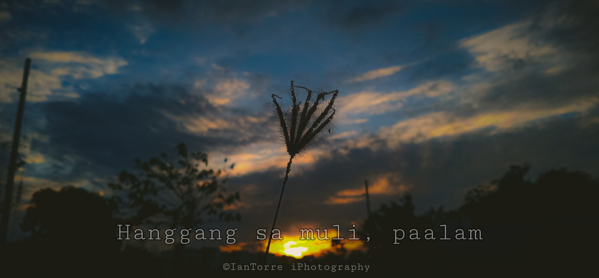
Title: Tanaw
Captured by: Ian Torre
Date captured: April 19, 2020
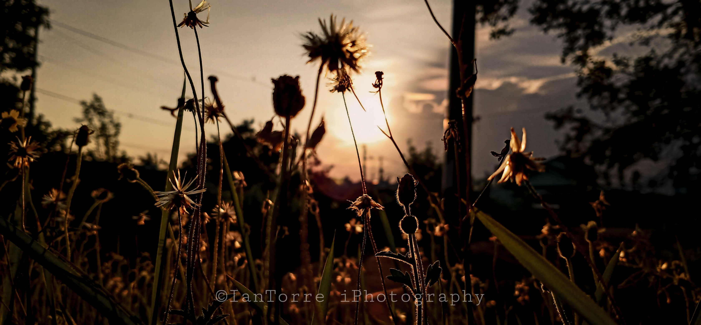
Title: Patak
Captured by: Ian Torre
Date captured: May 12, 2019
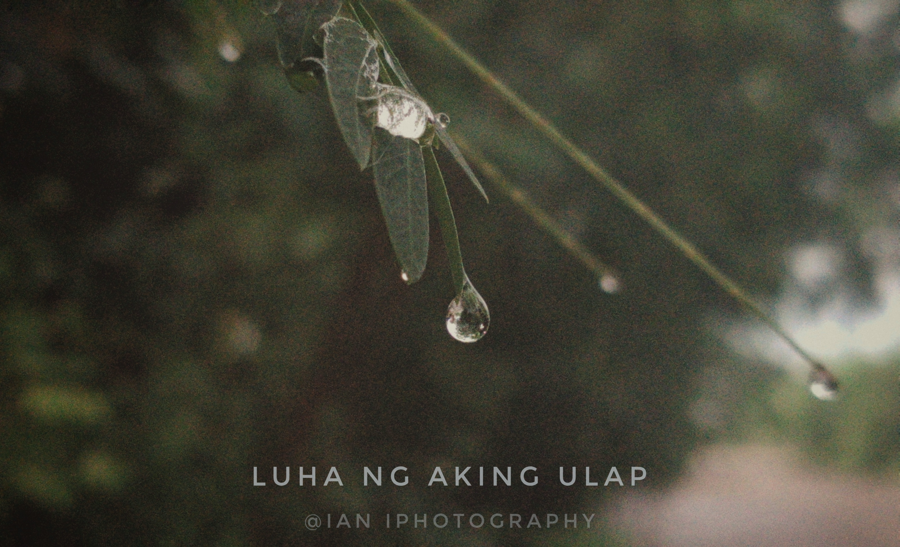
© 2018 - 2021 Bakuro Production Team
All Rights Reserved
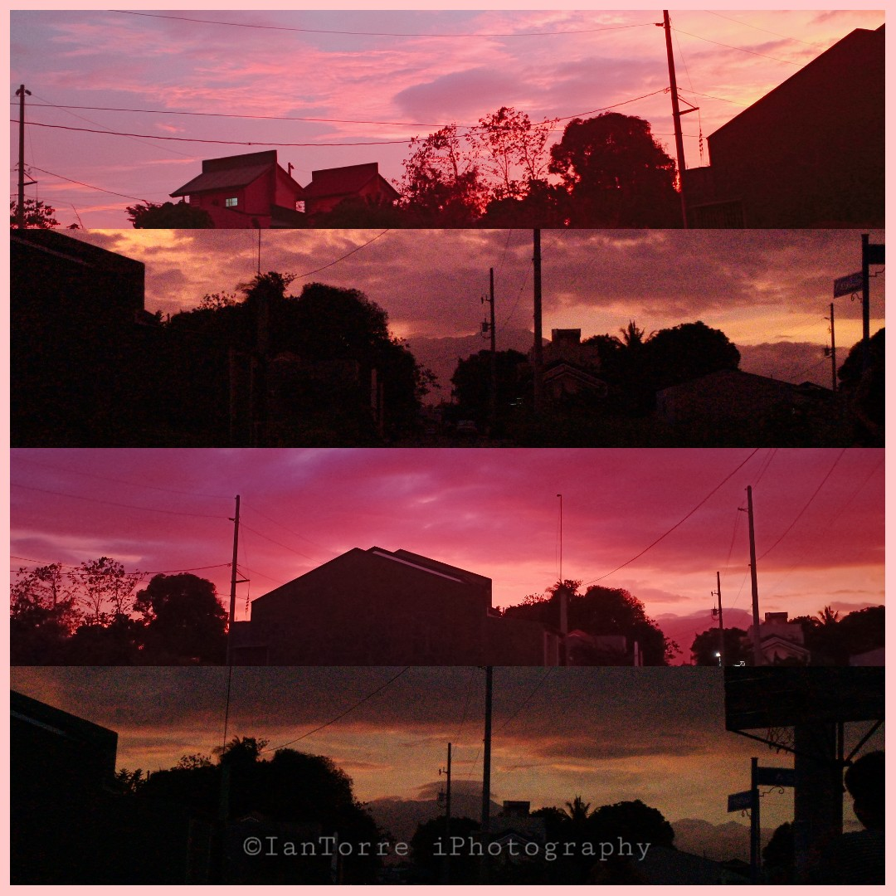
"The four pictures above was taken on the same day in four consecutive hours, and was extremely beautiful. God's work never fail to amaze."
Captured by: Ian Torre
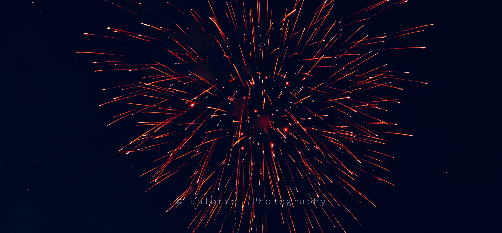
Both photos was taken at the "Philippine Arena // January 1, 2020".
The person who took the photo spent the "New Year" Alone and Lost the spark of a beloved person. He took the photo while convincing himself that he was totally okay.
He stated that the fireworks resembles his heart. "Broken in the form of acceptance."
Captured by: Ian Torre
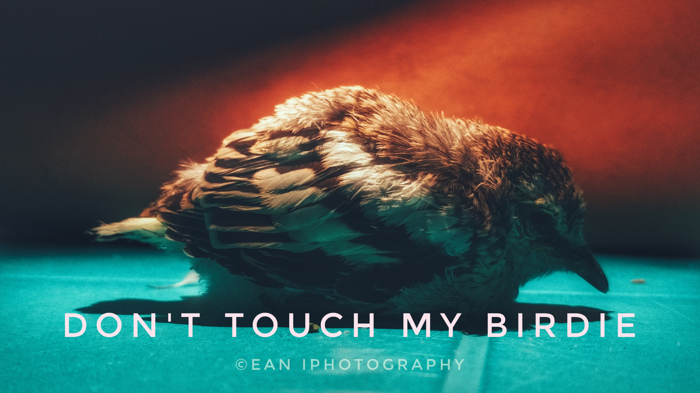
This bird's name is Nabong. He fell down from a mango tree outside our house. I kept him and lived for 1 month and 1 week. Unfortunately, he died because of extreme low temperature and i was not able to find a warm place for him for the night, he was still alive when i woke up, but after a few hours he died. R.I.P Nabong.
Captured by: Ian Torre
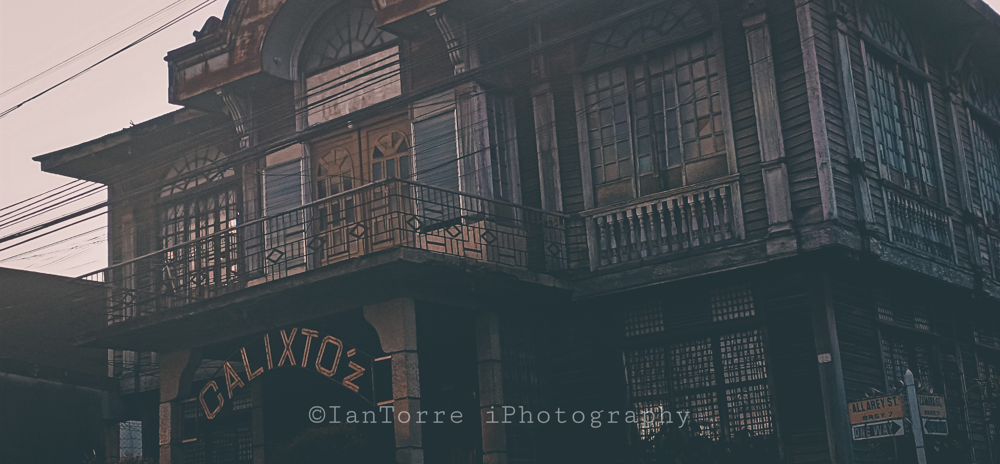
This manor was called the "War Manor" It was one of the most beautiful oldest house here in our city. But later on was used by the relatives of the owner. There we're rumors that every relative that considered themselves as the owner of the manor had a bad omen and had already fled out of the city.
Captured by: Ian Torre